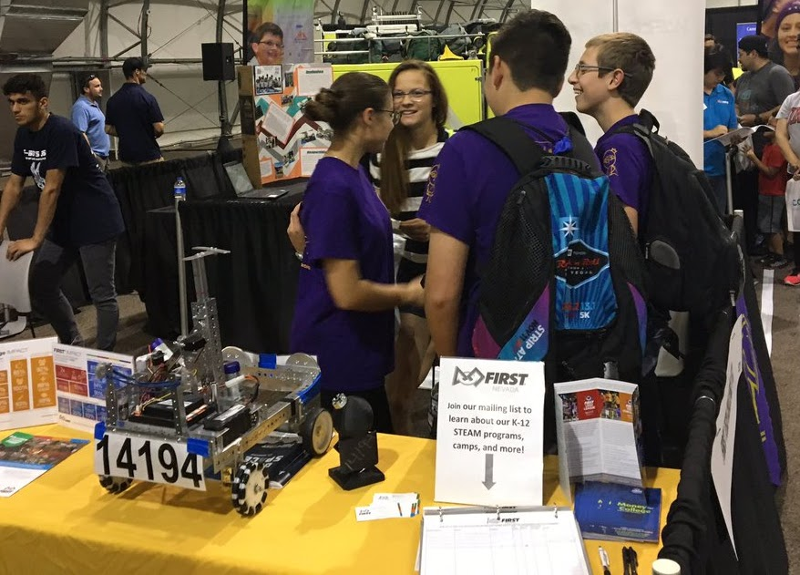
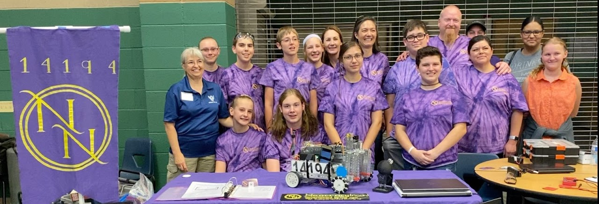
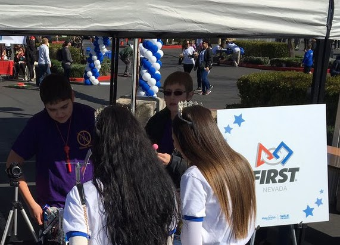
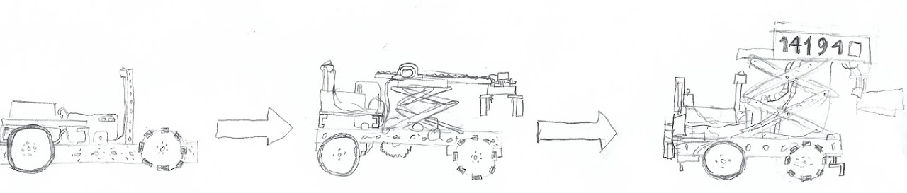
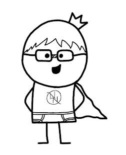

  
 
Hi, we are the Neocratic Nerds, and we are all very nerdy. We are a team that is made up of fun, smart, gifted, people who are ready for a challenge. This year we will be entering our third season of competing in First Tech Challenge (or FTC for short). Previously, many of us have participated in the FIRST LEGO League competition, as well as other robotics and STEM clubs. Last year we learned a lot and were able to prove our skills at numerous preparatory meets, as well as the Nevada state FTC competition. This year we are prepared to bring our new found knowledge to the playing field, and go above and beyond this 2020-21 season.